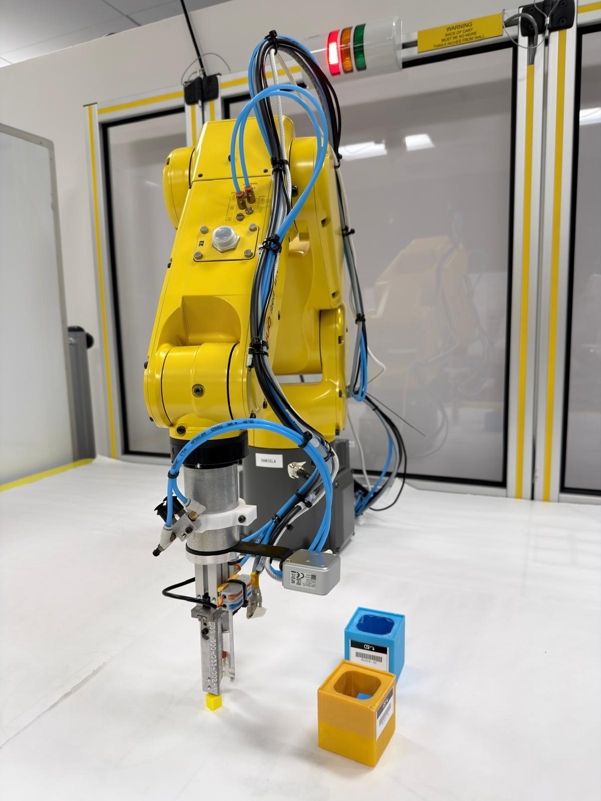
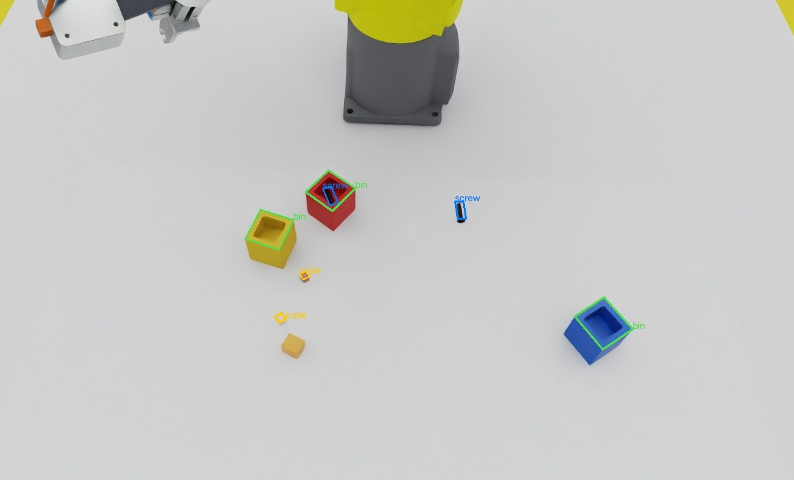
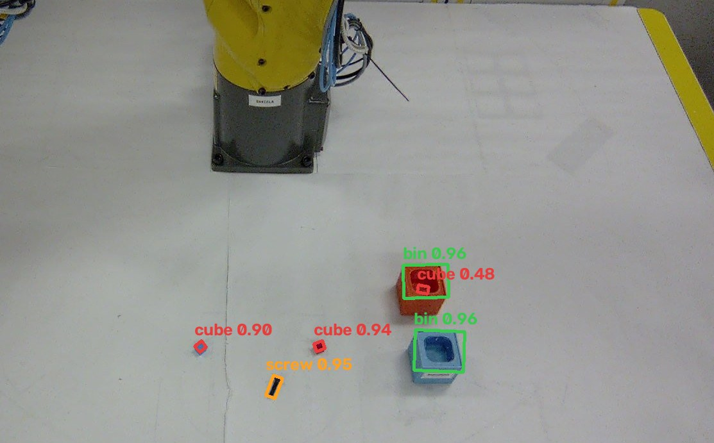
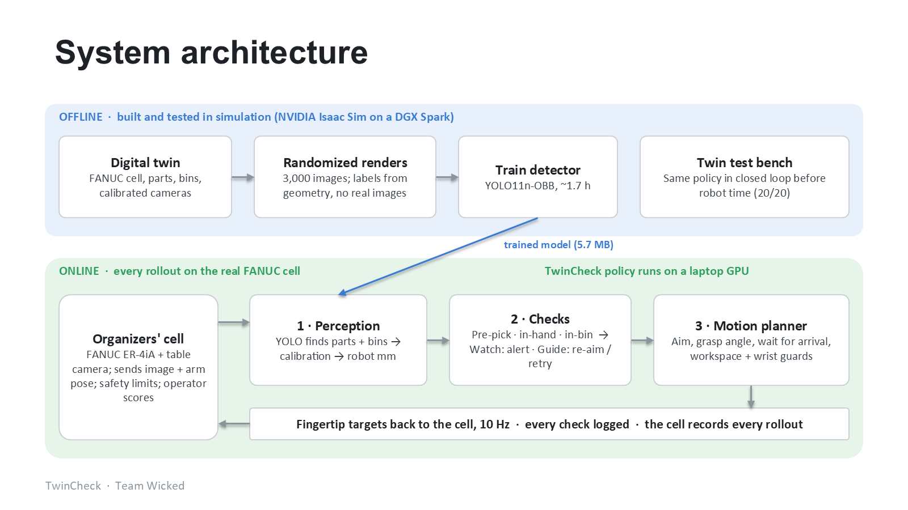
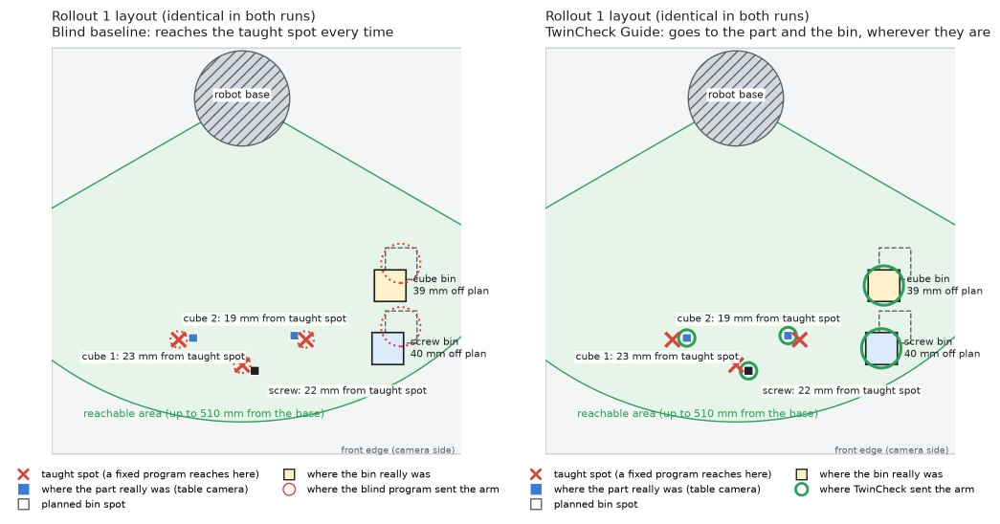

Taught robots fail silently when parts move
Factories teach a robot fixed spots and replay them. On a high-mix line, parts never land exactly there: the robot grabs air or crashes, and nobody notices until a bin is empty or the cell stops.

Top, wrist and side cameras from the cell's own recording. The bar underneath is TwinCheck's live log: green = check passed, red = check failed.
Press 2 to watch it next to the blind program on the same layout.
The AI never saw a real training image


One arm pose, yellow cubes. Found only 77% of test cubes: the twin was too easy.
Random arm poses, 3 cube colours, clutter, distractors, wide lighting: 100% found, 0.2 mm.
Parts resting inside bins, for the "did it land?" check: in-bin parts found 53% → 100%.
Bins as a class, anywhere and any colour; paler cubes: bins found 100%, 0.5 mm.
Unseen simulator exams (100 images each)
| Exam | Class | Found | Typical error |
|---|---|---|---|
| Bins anywhere, parts in bins | Bin | 100% | 0.5 mm |
| Bins anywhere, parts in bins | Cube | 99.4% | 0.3 mm |
| Bins anywhere, parts in bins | Screw | 100% | 0.3 mm |
| Parts on the table | Cube / screw | 100% | 0.2 mm |
The model
Ultralytics YOLO11n-OBB, 2.66 M parameters, 5.7 MB. Oriented boxes give each part's centre and angle. v4: 3,000 renders (~12,000 labels), 1280 px, 60 epochs, ~1.7 h on an NVIDIA DGX Spark. Runs at ~20 ms per frame on a laptop RTX 5060.
Live on this laptop: python demo/live_detect.py

Look before every pick, check after it
Look
The table camera finds every part and bin, in robot millimetres (organizers' calibration).
Act
The arm aims where the part really is, turns the fingers to its angle, and waits until it has really arrived (the real arm lags ~0.8 s).
Check ×3
Part there? In the hand? In the right bin? The twin is the answer key; the camera shows what really happened.
Recover
Missed grasp: retry from a fresh look. Anything else: alert the operator.
Baseline
Today's taught program. Our comparison point.
Watch
Same motion plus alerts. No reprogramming: bolts on to legacy robots.
Guide
Camera-guided picks, real bins, retries.
Every change was tested closed-loop in the twin first (20/20 rollouts) before using robot time.
Value for manufacturers
~2 h of compute, 0 robot hours
A new part goes from its 3D model to a working detector: render, train, deploy. We added the bin class this way with ~15 min of rendering and ~1.7 h of training, with no re-teaching on the line.
20 / 20 blind misses flagged in advance
Running beside the unchanged blind program (Watch), TwinCheck warned "will likely miss" before every pick. 19 really missed.
Re-aims instead of crashing
1 controller fault vs 7. Illustrative cell: 2,000 picks/shift × 5% off-position = 100 misses; at ~3 min reset each ≈ 5 h lost per shift. (Assumptions; replace with plant data.)
What adoption takes
- Cameras + a GPU PC. The model runs on a laptop GPU.
- A 3D model of each part. Training images are rendered in Isaac Sim, so no line time is needed.
- Start with Watch. Alerts on the existing program, so operators build trust from logged checks.
- Switch on Guide where the controller accepts external targets.
Generalizes and scales
- New products: a new part is a new 3D model, not a new robot program. That's the high-mix changeover Rockwell asked about.
- Legacy equipment: Watch needs no controller access, so it fits robots that are decades old.
- Operator trust: every check is logged with its camera frame, expected vs. observed.
- Broader impact: sim-first means fewer crashes, less scrap, and less expert time spent re-teaching.

Parts sat 19–23 mm and bins 39–40 mm from where a program was taught to reach. The blind program goes to the red X every time. TwinCheck goes to whatever the camera sees, so the difference is the policy, not the placement.
- Small sample: 10 real rollouts per condition, so the intervals are wide (60–98%).
- The one failure: rollout 8 hit a controller fault on its third pick, after the screw landed on the edge of its bin (our check flagged it).
- Check false alarms: in 2 rollouts the operator scored as sorted, our post-place check said "screw in the wrong bin". Bins seen at an angle are still hard.
- Speed: the arm is capped at ~55 mm/s, so a 3-part sort takes 96.5 s.
- Parts: only parts that fit the 12 mm jaws (10 mm cubes, M6 screws).
- Wrist-camera grasp check trained in the twin
- More real rollouts for tighter confidence intervals
- New parts via custom fingers (vials, caps)
- A live operator dashboard for Watch alerts
Checked on every pick.
Proven on a real FANUC arm.
Runs on hackathon.sidclab.org: TwinCheck r20261031-79333b, blind baseline r20261030-dcd07a. Code, every rollout clip and the logs are at github.com/rohan9607/Twincheck-Nvidia-Hackathon. Real data was used only for testing.